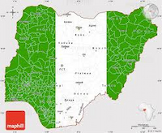

Iwajomo Godwin
About Me
Hi! I’m Godwin, also known as Vyper. I'm from Nigeria and currently live in Lagos with my family. I'm a student of BYU-Pathway and enjoy traveling, learning new things, and spending quality time with my family.
Lagos, Nigeria
Lagos is the largest city in Nigeria and one of the fastest-growing cities in the world. Originally a small Yoruba fishing village called Eko, it was renamed Lagos by the Portuguese in the 15th century. The city became a major port and was later annexed by the British in 1861. Lagos served as Nigeria’s capital until 1991 and remains the country’s commercial and cultural hub.